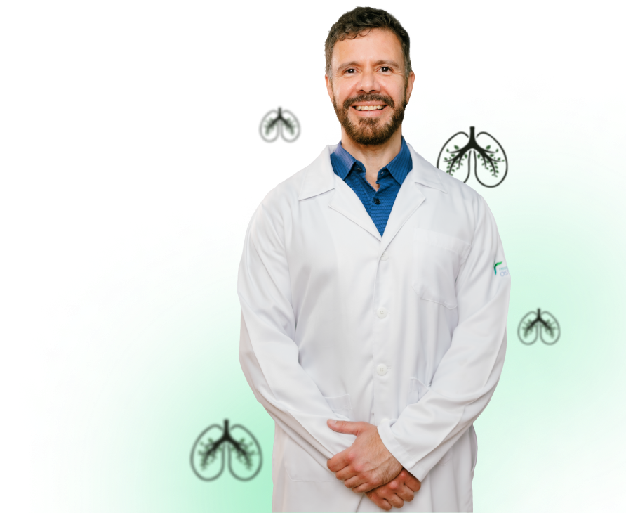

Ronco alto e frequente
Ronco intenso que acontece com frequência durante o sono.
APNEIA DO SONO
Ronco alto, pausas na respiração, engasgos durante a noite e sonolência durante o dia podem ser sinais que merecem atenção.

FIQUE ATENTO AOS SINAIS
Alguns sinais podem aparecer durante a noite, enquanto outros são percebidos ao longo do dia.
Ronco intenso que acontece com frequência durante o sono.
Alguém já percebeu que você para de respirar enquanto dorme?
Despertares acompanhados de sensação de sufoco ou engasgo.
Você dorme, mas acorda sem a sensação de ter descansado.
Vontade de dormir ou queda de energia em momentos do cotidiano.
Fadiga, atenção reduzida ou dificuldade para se concentrar.
Se você reconheceu esses sinais, vale conversar com um especialista.
Agendar uma avaliaçãoENTENDA A CONDIÇÃO
A apneia do sono é um distúrbio em que a respiração sofre interrupções repetidas durante o sono. Essas alterações podem prejudicar a qualidade do descanso e provocar sintomas no dia seguinte.
O diagnóstico não deve ser feito apenas pelos sintomas. A avaliação de um profissional de saúde ajuda a entender o quadro e, quando indicado, investigar o sono com exames específicos.
Quero conversar com o especialistaCUIDADO ESPECIALIZADO
O Dr. Pedro Medeiros é pneumologista e tisiologista, com formação em Pneumologia pela Faculdade de Medicina da USP e atuação na área respiratória.
COMO FUNCIONA
O atendimento é conduzido de forma individualizada, de acordo com as necessidades de cada paciente.
Fale com a equipe e escolha o melhor horário disponível.
Converse sobre seus sintomas, histórico e rotina de sono.
Quando indicado, podem ser solicitados exames para complementar a avaliação.
O cuidado segue de acordo com os resultados e necessidades identificadas.
ONDE ATENDE
Atendimento em duas unidades na região da Bela Vista.
Av. Paulista, 2064 – 21º andar
Bela Vista, São Paulo – SP
R. Cincinato Braga, 340 – 10º andar
Bela Vista, São Paulo – SP
DÚVIDAS FREQUENTES
É um distúrbio do sono caracterizado por interrupções repetidas da respiração durante o sono. A avaliação médica ajuda a investigar os sintomas e definir a conduta adequada.
Não necessariamente. O ronco pode ter diferentes causas, mas quando é intenso e vem acompanhado de pausas na respiração, engasgos ou sonolência durante o dia, merece avaliação.
A investigação começa pela avaliação clínica e, conforme a necessidade de cada pessoa, pode incluir exames específicos do sono.
Não. Se você tem sintomas que incomodam, preocupam ou afetam seu descanso e sua rotina, converse com um profissional de saúde.
DÊ O PRÓXIMO PASSO
Preencha seus dados e a equipe poderá entrar em contato para orientar o agendamento.